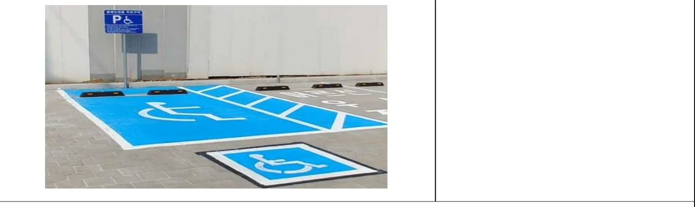

753. 다음 중 장애인･노인･임산부 등의 편의증진 보장에 관한 법령상‘장애인전용주차구역 주차 방해 행위’로 바르지 않은 2가지는?

- ①장애인전용주차구역 내에 물건 등을 쌓아 주차를 방해하는 행위
- ②장애인전용주차구역 앞이나 뒤, 양 측면에 물건 등을 쌓거나 주차하는 행위
- ③장애인전용주차구역 주차표지가 붙어 있지 아니한 자동차를 장애인전용주차구역에 주차하는 행위
- ④장애인전용주차구역 선과 장애인전용표시 등을 지우거나 훼손하여 주차를 방해하는 행위
- ⑤장애인전용주차구역 주차표지가 붙어 있지만 보행에 장애가 있는 사람이 타지 아니한 자동차를 장애인전용주차구역에 주차하는 행위
정답 보기
정답
③ 장애인전용주차구역 주차표지가 붙어 있지 아니한 자동차를 장애인전용주차구역에 주차하는 행위
⑤ 장애인전용주차구역 주차표지가 붙어 있지만 보행에 장애가 있는 사람이 타지 아니한 자동차를 장애인전용주차구역에
주차하는 행위
근거·해설
장애인ㆍ노인ㆍ임산부 등의 편의증진 보장에 관한 법률 제17조(장애인전용주차구역 등) - 누구든지 제2항에 따른 장애인전용주차구역 주차표지가 붙어 있지 아니한 자동차를 장애인전용주차구역에 주차하여서는 아니 된다. 장애인전용주차구역 주차표지가 붙어 있는 자동차에 보행에 장애가 있는 사람이 타지 아니한 경우에도 같다. - 누구든지 장애인전용주차구역에 물건을 쌓거나 그 통행로를 가로막는 등 주차를 방해하는 행위를 하여서는 아니 된다. 장애인ㆍ노인ㆍ임산부 등의 편의증진 보장에 관한 법률 시행령 제9조(장애인전용주차구역 주차 방해 행위) 법 제17조 제5항 에 따른 주차 방해 행위는 다음 각 호의 행위로 한다. 1. 장애인전용주차구역 내에 물건 등을 쌓아 주차를 방해하는 행위 2. 장애인전용주차구역 앞이나 뒤, 양 측면에 물건 등을 쌓거나 주차하는 행위 3. 장애인전용주차구역 진입로에 물건 등을 쌓거나 주차하는 행위 4. 장애인전용주차구역 선과 장애인전용표시 등을 지우거나 훼손하여 주차를 방해하는 행위 5. 그 밖에 장애인전용주차구역에 주차를 방해하는 행위